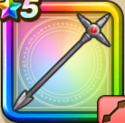

ハンマースピア
攻略班 7.0点 / なぎはらいラリホーショット(魔弾)ベギラゴンショット(魔弾)ビンタベホイミショットガン(魔弾)
くわしい特徴
【レベル別習得スキル】 Lv1【パラディン】かいふく魔力+5 Lv1なぎはらい（消費MP：12）武器を振りまわして、敵全体に威力120%の斬撃ダメージを与える Lv10ラリホーショット(魔弾)（消費MP：10）敵1体を確率で眠らせる Lv15ベギラゴンショット(魔弾)（消費MP：21）敵全体に威力210％のギラ属性体技ダメージを与える Lv20ビンタ（消費MP：12）味方1人の混乱と魅了を解除する Lv30ベホイミショットガン(魔弾)（消費MP：42）味方全体のHPを回復し、まれにHPを15~20追加で回復する Lv35じゅもんHP回復効果+10% Lv40エレメント系へのダメージ+10% Lv45さいだいMP+12 Lv50かいふく魔力+12 【限界突破スキル】 1凸とくぎHP回復効果+5% 2凸じゅもんHP回復効果+5% 3凸とくぎHP回復効果+5% 4凸じゅもんHP回復効果+5%